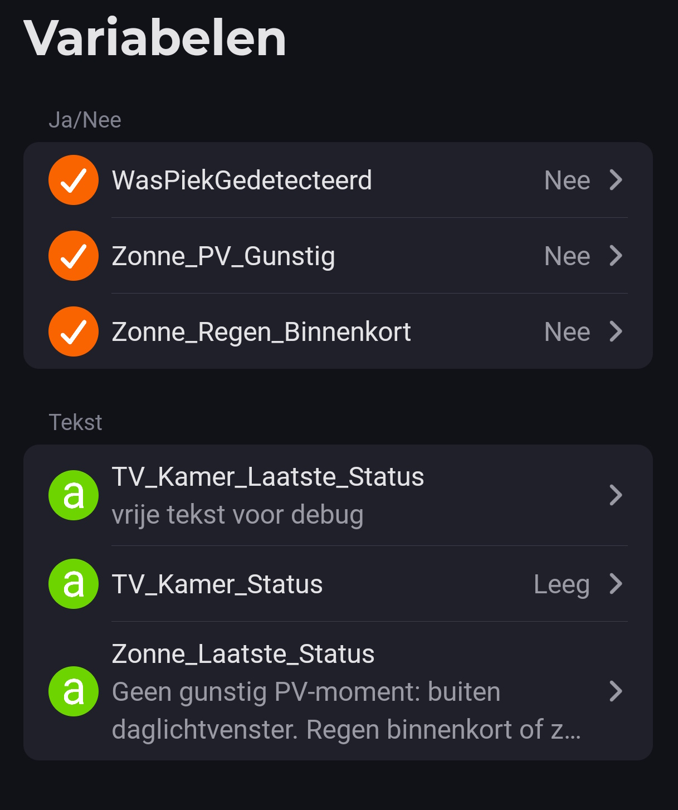
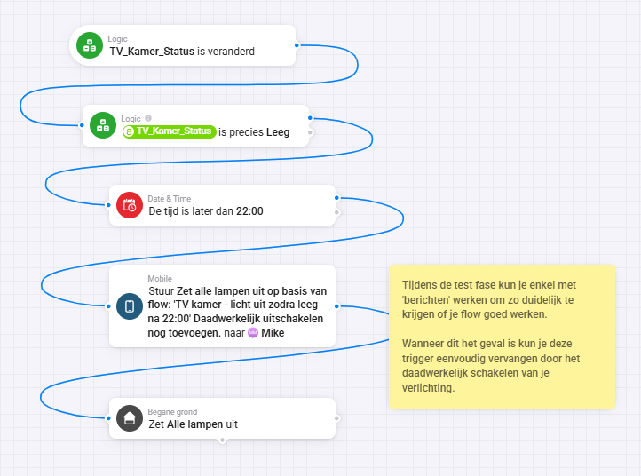
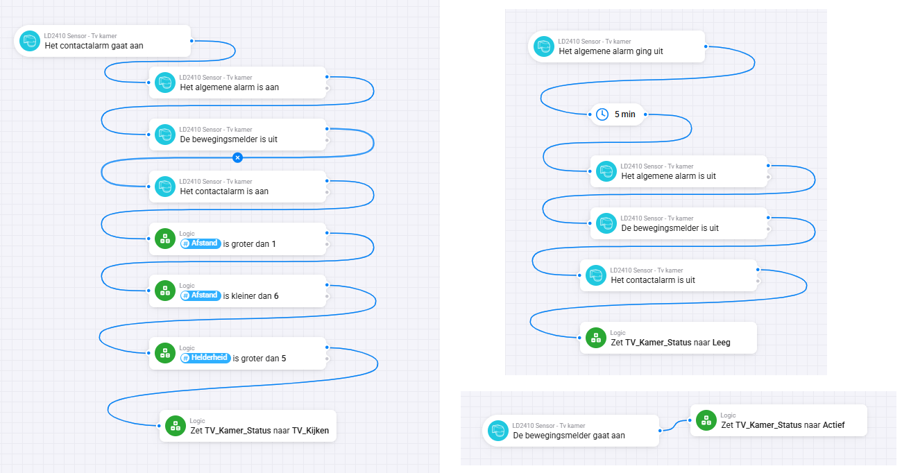
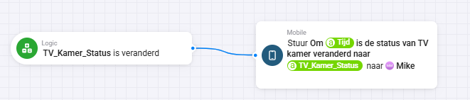

Automatisch de verlichting uitschakelen om 22:00 uur klinkt ideaal, totdat je zelf nog midden in een spannende film zit. Gelukkig kun je dit met een LD2410 aanwezigheidssensor veel slimmer aanpakken. Door de woonkamer eerst een eigen status te geven, weet Homey precies wanneer de ruimte daadwerkelijk leeg is en kan de verlichting op het juiste moment uitschakelen.
In deze tutorial maken we daarom geen losse voorwaarden in elke lichtflow. We bouwen eerst een kleine statuslaag met één tekstvariabele: TV_Kamer_Status. Die variabele krijgt via Advanced Flows de waarde Actief, TV_Kijken of Leeg. Daarna hoeft de verlichting alleen nog naar die ene status te kijken.
Wat leer je in deze tutorial?
Je leert hoe je de gegevens van een LD2410 sensor omzet naar een slimme kamerstatus binnen Homey. Hierdoor worden je flows overzichtelijker, betrouwbaarder en veel eenvoudiger verder uit te breiden.
- Status in plaats van losse sensorlogica → de sensor bepaalt eerst de situatie in de kamer, daarna schakelen andere flows op basis van die status.
- Veiliger uitschakelen na 22:00 → de lampen gaan alleen uit als de woonkamer volgens Homey echt leeg is.
Het resultaat is een opzet waarbij je bestaande flow Licht uit na 22:00 uur niet meer blind op tijd werkt, maar rekening houdt met aanwezigheid in de woonkamer.
Voor wie is deze tutorial?
Gebruik je een LD2410 aanwezigheidssensor in je woonkamer, woonkamer of zithoek? Dan is deze tutorial voor jou. Vooral wanneer je de sensor via Homeyduino of een vergelijkbare oplossing hebt gekoppeld en meerdere meetwaarden beschikbaar hebt, haal je met deze aanpak het maximale uit je automatiseringen.
Wat heb je nodig?
- Een werkende LD2410 aanwezigheidssensor in Homey.
- Homey Advanced Flow.
- Een tekstvariabele met de naam TV_Kamer_Status.
- Een bestaande of nieuwe flow die de woonkamerverlichting na 22:00 uur mag uitschakelen.
- Een paar testmomenten waarbij je kunt controleren of de sensor logisch schakelt.
Stap-voor-stap uitleg
1. Maak één tekstvariabele aan
Open Homey Logica en maak één centrale tekstvariabele aan. Door overal dezelfde naam te gebruiken blijven je flows overzichtelijk en voorkom je fouten wanneer je later uitbreidingen toevoegt.
- Naam: TV_Kamer_Status
- Type: Tekst
- Waarden die je flows gaan invullen: Actief, TV_Kijken en Leeg

2. Maak een flow voor actieve beweging
De eerste flow is eenvoudig maar belangrijk. Zodra de LD2410 duidelijke beweging detecteert, zet Homey de status direct op Actief. Daarmee weet het systeem dat de ruimte actief wordt gebruikt.
3. Maak een flow voor TV kijken
Een van de sterke punten van de LD2410 is dat deze ook stilzittende personen kan detecteren. Dat maakt de sensor ideaal voor een woonkamer. Met deze flow herken je de situatie waarin iemand rustig op de bank zit zonder veel te bewegen, zodat Homey de status op TV_Kijken kan zetten.
Flow 1 — TV kamer - status actief
ALS
LD2410 Sensor → De bewegingsmelder gaat aan
DAN
Logica → Zet tekstvariabele TV_Kamer_Status naar Actief
Flow 2 — TV kamer - status TV kijken
ALS
LD2410 Sensor → Het contactalarm gaat aan
EN
LD2410 Sensor → Het algemene alarm is aan
LD2410 Sensor → De bewegingsmelder is uit
LD2410 Sensor → Het contactalarm is aan
LD2410 Sensor → Afstand is groter dan 1,5
LD2410 Sensor → Afstand is kleiner dan 4,5
LD2410 Sensor → Helderheid is groter dan 5
DAN
Wacht 30 seconden
Logica → Zet tekstvariabele TV_Kamer_Status naar TV_Kijken
Flow 3 — TV kamer - status leeg na controle
ALS
LD2410 Sensor → Het algemene alarm gaat uit
DAN
Wacht 5 minuten
EN daarna opnieuw controleren:
LD2410 Sensor → Het algemene alarm is uit
LD2410 Sensor → De bewegingsmelder is uit
LD2410 Sensor → Het contactalarm is uit
DAN
Logica → Zet tekstvariabele TV_Kamer_Status naar Leeg
Flow 4 — TV kamer - licht uit zodra leeg na 22:00
ALS
TV_Kamer_Status verandert
EN
TV_Kamer_Status is precies Leeg
De tijd is later dan 22:00
DAN
Zone Tv kamer → Zet alle lampen uit4. Maak een flow voor leeg na controle
Sensoren kunnen soms kort een aanwezigheid missen. Om ongewenste schakelingen te voorkomen laat je Homey daarom eerst enkele minuten wachten. Pas wanneer alle relevante signalen nog steeds uit staan, wordt de kamerstatus gewijzigd naar Leeg.
5. Laat de lichtflow alleen naar de status kijken
Nu komt alles samen. Zodra de status verandert naar Leeg én het later is dan 22:00 uur, mag Homey de verlichting uitschakelen. Zo geniet je van extra comfort én voorkom je onnodig energieverbruik.

Integratie met Homey
Deze opzet past goed bij Homey, omdat Advanced Flow sterk is in het combineren van sensoren, variabelen, wachttijden en voorwaarden. De LD2410 blijft verantwoordelijk voor de ruwe detectie, terwijl Homey bepaalt wat die metingen praktisch betekenen voor de ruimte.
Met één statusvariabele kun je later meer automatiseringen toevoegen zonder de hele sensorketen opnieuw op te bouwen.
- Gebruik TV_Kamer_Status = Actief om licht aan te houden zolang iemand beweegt.
- Gebruik TV_Kamer_Status = TV_Kijken om automatische uitschakeling te blokkeren tijdens stilzitten op de bank.
- Gebruik TV_Kamer_Status = Leeg om verlichting, sfeerlampen of andere apparaten veilig uit te schakelen.

Wat kun je hierna?
Als deze basis werkt, kun je de drempels rustig finetunen. Begin met de voorgestelde waarden en kijk een paar avonden of de status logisch wisselt. Wordt TV_Kijken te snel geactiveerd, verhoog dan de minimale stilstandsenergie of maak de afstandszone kleiner. Wordt de kamer te snel leeg gemeld, verleng dan de wachttijd van 5 minuten.

Veelgemaakte fouten en aandachtspunten
- Gebruik niet alleen bewegingsalarm voor een woonkamer. Iemand die stil op de bank zit, kan dan ten onrechte als afwezig worden gezien.
- Zet de status niet direct op Leeg. Gebruik eerst een wachttijd en controleer daarna opnieuw of de sensor nog steeds niets ziet.
- Gebruik in deze eenvoudige versie alleen TV_Kamer_Status. Extra variabelen zoals TV_Kamer_Bezet zijn pas nodig als je later meer nuance wilt toevoegen.
Conclusie
Door je LD2410-metingen eerst om te zetten naar één duidelijke Homey-status, maak je je woonkamerautomatisering veel betrouwbaarder. De verlichting gaat niet meer simpelweg uit omdat het 22:00 uur is, maar pas als de kamer daadwerkelijk leeg is. Dat maakt de flow menselijker, veiliger en makkelijker te onderhouden.